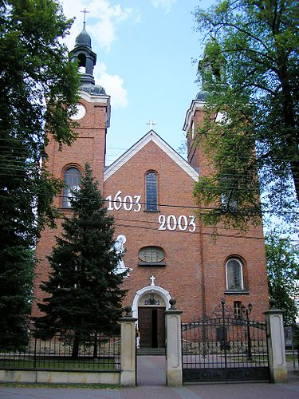

Kościół Narodzenia Najświętszej Marii Panny w Jeżowem – polska świątynia rzymskokatolicka znajdująca się w Jeżowem.
Kościół zbudowano w latach 1914-1928. Budowniczymi byli: ks. Józef Tokarski i ks. Jan Swół.
Świątynia została poświęcona w roku 1928 przez biskupa przemyskiego - ks. Karola Józefa Fischera.
Przedstawiany kościół to duża, trójnawowa budowla z węższym prezbiterium i zakrystią.
